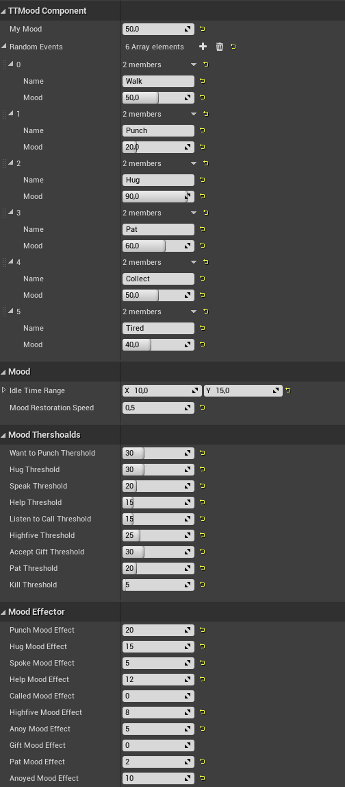

Unreal / C++
Character interactions and AI
To give the characters some extra character I made it so that they could refuse to do what you asked them based on their current mood and on their disposition. Furthermore, to make them more alive I added a way for them to do random actions based on there current mood. I made a weighted random action list that could be populated in blueprints to make it more accessible for the designers to add to the responses and actions the characters could do. The characters current mood affects what sort of actions they will and are more likely to do. If the character is very happy it will never punch another character but if they are just content there is a chance that they will do something mischievous but the probability for it is low, instead they are most likely to do a neutral action like walk in a random direction. By having this weighted randomness I could make it so that if they are happy there is no chance they will do something bad and the other way around.
int32 UTTMoodComponent::GetWeightedRandomMoodIndex()
{
TArray> weightedIndex;
float dist = 0;
float totalDist = 0;
for (size_t i = 0; i < randomEvents.Num(); i++)
{
dist = FMath::Abs(myMood - randomEvents[i].Mood);
if (dist <= randomEventRange)
{
TPair tempPair;
totalDist += (randomEventRange - dist);
tempPair.Key = totalDist;
tempPair.Value = i;
weightedIndex.Add(tempPair);
}
}
float randomValue = FMath::RandRange(0.0, totalDist);
for (int i = 0; i < weightedIndex.Num(); i++)
{
if(randomValue <= weightedIndex[i].Key)
return weightedIndex[i].Value;
}
return 0;
}
